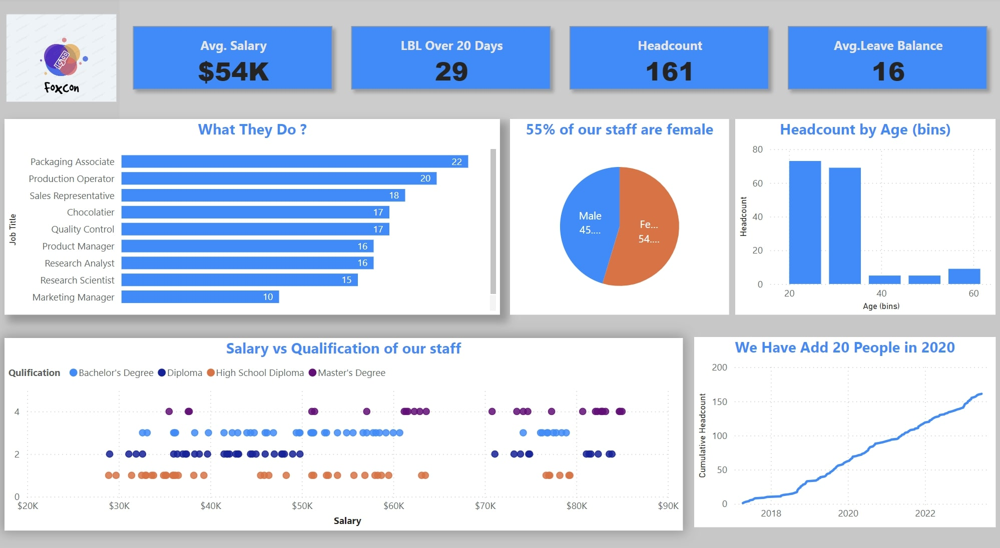

Clear requirementsBRD/FRD, user stories and acceptance criteria
Business Analysis · Requirements · Data & Delivery
From business problem to delivery-ready solutions.
I connect business stakeholders and technical teams—turning needs into BRD/FRD, user stories, process and API flows, data insights, UAT evidence and a clear handover.
BRD / FRDUser Stories & AcceptanceSQL & Power BIAPI & UATProcess & Figma Diagrams
Working style Scope first·Evidence-led·Clear handover
BUSINESS✦IMPACT
01 Understand
02 Analyze
03 Design
04 Deliver
DATA → INSIGHTMake clarity
INSIGHT → ACTIONMove forward
Data-backed insightsSQL, Python and Power BI analysis
System clarityAPI flows, field mapping and process diagrams
Structured validationTraceability, UAT scenarios and defect follow-up
Practical handoverDecisions, assumptions and clear next steps
SELECTED WORK
Projects built around real questions.
Explore analytics, business intelligence, data engineering, and AI/RAG projects. Each card links to its GitHub repository.
 Portfolio screenshot
Portfolio screenshotSales Data Analysis
SQL analysis of product performance, top salespeople by region, high-value transactions, and geographic trends.
View repository ↗
Portfolio screenshotHR Data Analysis Dashboard
Power BI analysis of employee performance, turnover, retention, recruitment trends, and workforce metrics.
View repository ↗Business Insights Report
Dashboard for reviewing KPIs, sales performance, financial health, customer behavior, and operational efficiency.
View repository ↗ Portfolio screenshot
Portfolio screenshotSales Forecasting Report
Sales performance, monthly profit trends, and shipment efficiency reporting for data-informed planning.
View repository ↗ Portfolio screenshot
Portfolio screenshotLoan Data Analytics
SQL exploration of loan grades, interest rates, repayment behavior, state-level patterns, and default risk.
View repository ↗ Illustrative project preview
Illustrative project previewGameZone Business Intelligence
BI platform with PostgreSQL-backed workflows; its README documents 42,330 records and a stated 99.75% data-quality measure.
View repository ↗ Illustrative workflow preview
Illustrative workflow previewExcel Dashboard Analysis
Python workflow to export workbook sheets to CSV, assess missing values, summarize numeric columns, create visualizations, and generate a Markdown report.
Read project notes ↗ Illustrative architecture preview
Illustrative architecture previewMetaLayer — ETL Pipeline
Apache Airflow and Astro pipeline with Bronze/Silver/Gold layers, PostgreSQL transformations, orchestration and data-quality checks.
View repository ↗ClinChat-style RAG App
Clinical AI/RAG application described with FastAPI, FAISS retrieval, model orchestration, evaluation tooling and Docker components.
View repository ↗DOCUMENTATION EXAMPLES
See how I turn requirements into delivery-ready artifacts.
Explore a connected fictional payment-reconciliation case study—from business requirements and functional specifications to traceability, UAT, workshop actions, diagrams and editable Figma wireframes.
Fictional portfolio case study. PayTrack, all names and data are illustrative. These are examples of documentation style, not client deliverables or executed test evidence.
BRD & FRD
Business objectives, scope, functional behavior, rules, permissions, validation and open decisions.
User Stories & Acceptance Criteria
Prioritized stories with Given/When/Then criteria, negative scenarios and dependencies.
RTM, Test Cases & UAT
Requirements traceability, expected results, entry/exit criteria and a sign-off template.
Workshop MoM & RAID
Discovery summary, decision log, action register, risks, assumptions, issues and dependencies.
Process & Data Diagrams
Reconciliation flow, conceptual architecture and logical entity relationship diagram.
Figma UI Wireframes
Editable dashboard and exception detail screens with sample states, fields and audit history.
WAYS I CAN HELP
From a business problem to a clear next step.
Scoped support for teams that need clearer requirements, stronger reporting, reliable data workflows or a practical AI/RAG prototype.
Requirements & process clarity
Turn stakeholder needs into work that Product, Engineering and QA can understand and validate.
- BRD / FRD, user stories and acceptance criteria
- AS-IS / TO-BE maps, business rules and gap analysis
- RTM, change impact and workshop outputs
Reporting that answers business questions
Shape reporting around business decisions rather than charts alone.
- SQL analysis and KPI definition
- Power BI dashboard requirements and reporting
- Data dictionaries, measures and insight summaries
Understand the data before acting
Investigate datasets and expose issues that can distort business reporting or analysis.
- Missing values, duplicates and schema checks
- Reusable SQL queries and exploratory analysis
- Data quality findings and recommended next steps
Repeatable data workflows
Structure how data moves from source systems into analytics layers.
- ETL workflow and orchestration review
- Bronze / Silver / Gold pipeline patterns
- Validation checks, monitoring needs and handover docs
Explore a grounded AI workflow
Help shape a proof of concept for knowledge retrieval and AI-assisted information access.
- Document ingestion and retrieval flow
- RAG architecture and API workflow mapping
- Evaluation questions, limitations and handover
Requirements connected to acceptance
Help teams validate scope and track requirements through testing and release readiness.
- UAT scenarios and test coverage mapping
- Acceptance criteria, defect triage and traceability
- Change requests, risks and release handover
↳
Engagements are scoped to fit the problem. After an initial discussion, we can agree on deliverables, assumptions, timeline and review points. Pricing is confirmed after the scope is understood.
A CLEAR WORKING PROCESS
Good work starts with alignment.
Know what happens next before a project starts. No vague deliverables or surprise scope.
Share the challenge
Send the business goal, current blocker and what a useful outcome would look like.
Clarify the scope
Align on users, inputs, constraints, deliverables and how success will be reviewed.
Deliver in checkpoints
Work through agreed artifacts or analysis, with review points to catch gaps early.
Handover with clarity
Receive the agreed outputs, decisions, assumptions and recommended next steps.
CAPABILITIES
Connecting business, data & technology.
A cross-functional toolkit to move from discovery and analysis through implementation support and measurable outcomes.
Business Analysis
Requirements elicitation, BRD/FRD, user stories, BDD criteria, process mapping, RTM and stakeholder alignment.
Data & BI
SQL/Python analysis, Power BI reporting, data-quality assessment, KPI interpretation and business insights.
Data Engineering
ETL pipeline patterns, workflow orchestration, medallion architecture and data validation.
AI & Intelligent Apps
RAG architecture, retrieval workflows, evaluation concepts and API-driven AI application components.
PROFESSIONAL STORY
From requirements to delivery.
Experience across business analysis, software delivery, reporting and process improvement.
BUSINESS ANALYST
Marolix Technology Solutions
API requirements, data mapping, stakeholder workshops, transaction analysis, UAT coordination and Agile change traceability.
BUSINESS ANALYST
V Moksha Technologies
Root-cause analysis, SQL-based investigation and AS-IS / TO-BE process mapping.
BUSINESS ANALYST
Iinfocomm IT Services
Functional requirements, BDD acceptance criteria, UAT coordination and requirements traceability.
ASSOCIATE SOFTWARE ENGINEER
Iinfocomm IT Services
Reporting requirements and collaboration with Finance, Operations and Engineering stakeholders; promoted into Business Analysis.
START A CONVERSATION
Tell me what you’re trying to solve.
A short project brief is enough to get started. The details below help me understand the problem, the kind of help you need and the next step to discuss.
Let’s discuss your project
For freelance enquiries, business analysis support, dashboards, data workflows or AI/RAG prototypes.
✓
Clear scope before work begins
Deliverables, assumptions and timeline are discussed before confirming an engagement.
Please do not include passwords, confidential customer data or sensitive personal information in an initial enquiry.
PROJECT ENQUIRY
What do you need help with?
Complete the short brief to prepare an email with the relevant details.